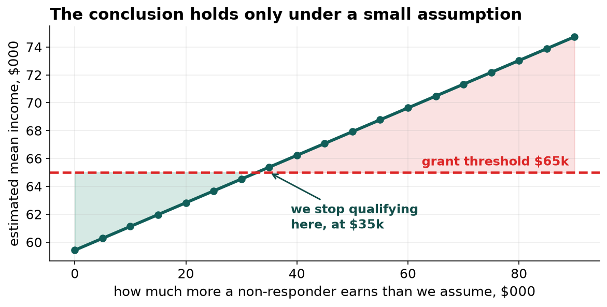
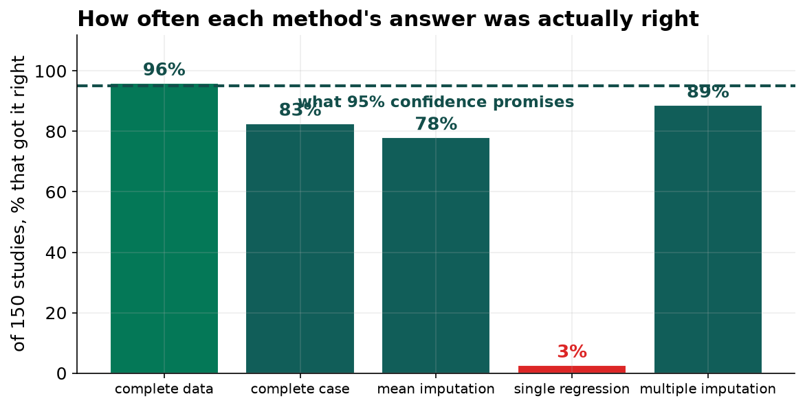

Do Not Submit the Grant Application.
Our income figure assumes the people who declined to answer earn about what everyone else earns. They do not, and the county's eligibility depends entirely on that assumption. Separately, half the survey has a gap in it and the way we have been filling those gaps is the worst of the four options we tested.
Recommendation
Hold the grant application and fund a short follow-up of the people who declined to give their income. A hundred of them would settle it. On the clinical question, the BMI finding stands, but it should be produced with multiple imputation rather than the method currently in the pipeline.
Half the survey has a gap, and most of them are invisible
A completeness check on this file reports that 29.6 percent of respondents are missing something. The real figure is 51.2 percent. The difference is codes that look like data.
| Column | How a gap was recorded | What happens if it is missed |
|---|---|---|
| Activity minutes | -1 | Averaged as minus one minute of exercise a week |
| Household income | 999 | Averaged as a household on $999,000 |
| BMI | Blank, or the words not measured | The text makes the column non-numeric and the blank count comes out wrong |
A blank announces itself. A -1 does not weaken a variable, it corrupts it, and no tool will warn us because as far as the arithmetic is concerned it is a number.
The grant question
We are asked to report mean household income. The state grant is available below $65,000 and our figure is $59,400, which qualifies comfortably.
The problem is who is missing. Seventeen percent of respondents declined to answer, and people decline to state their income for reasons that have to do with what it is. We tested three ways of handling that. All three returned about $59,400, and all three make the same assumption: that the people who declined earn roughly what the people who answered earn.

Our conclusion holds only while non-responders earn less than $35,000 more than we are assuming. That is not a comfortable margin. Filing an application whose eligibility rests on an assumption we cannot support, and which we have reason to think is wrong in a specific direction, is a risk to the relationship with the state rather than just a statistical concern.
The clinical question, and a change to how we do this
The BMI and blood pressure finding is sound: about 0.95 mm Hg per BMI unit, adjusted. That is enough to size the intervention.
Getting there is where we should change something. We tested four ways of handling the gaps on data where we happened to know the removed values, so each method could be scored rather than argued about, and then repeated the whole study 150 times.

The method that fills each gap with a prediction got the right answer 3 times in 150, while producing the narrowest and most confident-looking interval of the lot. It is the most reasonable-looking option and by a wide margin the worst, because it treats values it invented as though they had been measured.
Multiple imputation was the best of the feasible methods, and it used all 1,400 respondents rather than the 683 with no gaps. It works by filling each gap twenty different ways and carrying the disagreement into the margin of error, which is how the interval ends up honest.
What we are asking for
One. Hold the grant filing and commission a follow-up survey of roughly a hundred non-responders. It is a small cost against a decision that currently rests on nothing.
Two. Document the sentinel codes in the collection system and stop new ones being created.
Three. Move the analysis pipeline to multiple imputation, and stop filling gaps with single predictions.